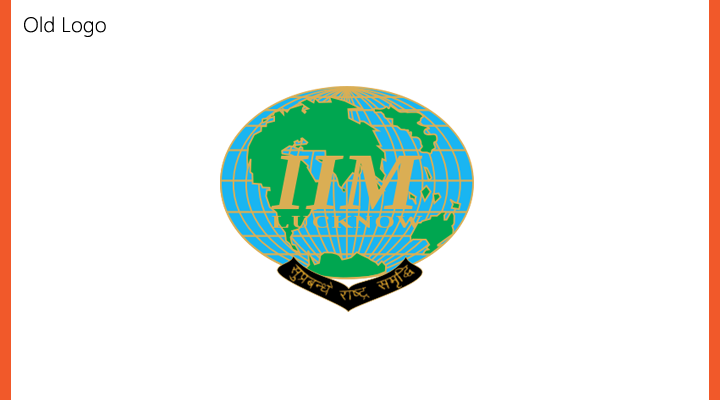
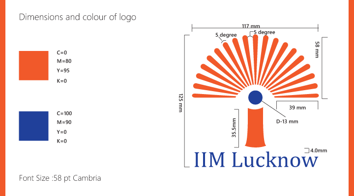
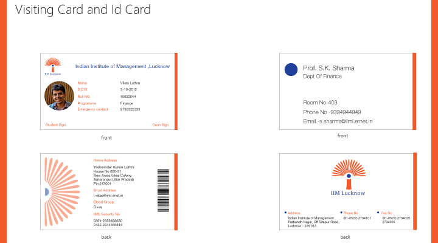
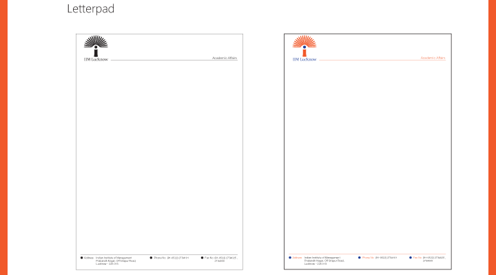
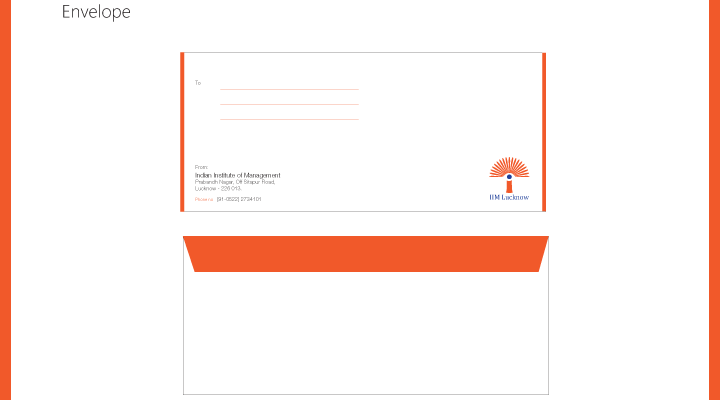

IIM Lucknow Logo Redesign
an assignment for university logo redesign
Concept of Logo
Visual Inspiration: Eye, Sun Rays, Tree, Sun, letter i
The logo has been designed in the form of tree which symbolizes
the philosophy of IIM Lucknow to serve the nation and work
for its well being through their better management
practices,The tree symblizes an institution of service
,knowledge ,vision and leadership.
The bark with the small circle stands for an invidual who is
an innovator , leader and a manager (which IIML expects to
produce) that could stand strong and determinant and
could easily manage an organization of people (symboized
by upper portion of tree ) and help it grow and reach new
heights through his vision,innovation and imagination.
This also symbolizes the philosophy of IIML to globally
integrate with many institutions(symbolized by group of
rays) and work for better management practices
The upper part of logo also creates an image of spread of
sun rays which stands creation and spread ofknowledge
and management practices.
The colour scheme of the logo has been keeping in mind
the colour of indian flag as well as sun rays






